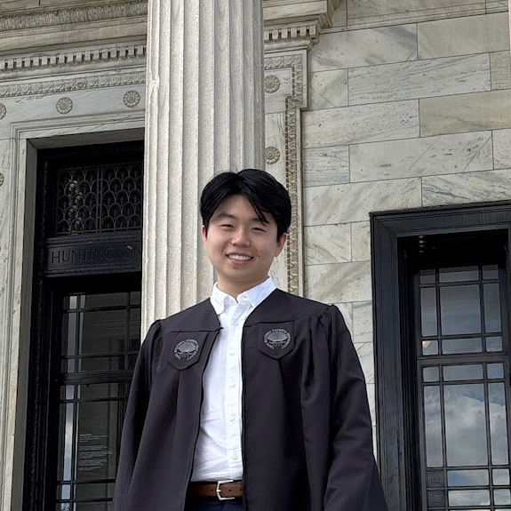

Matthew S. Chang
About Me
I am a research assistant at Case Western Reserve University in Berkley Gryder's lab. I graduated from Case Western Reserve University with my bachelor's in chemistry and minors in mathematics and computer science in the spring of 2025. I am experienced in chemical biology, cancer biology, and epigenetics, and I am interested in leveraging insights from molecular and genomic techniques to identify targetable vulnerabilities and developing new tools to improve patient outcomes. I am currently applying to PhD programs.
You can reach out to me at msc148@case.edu